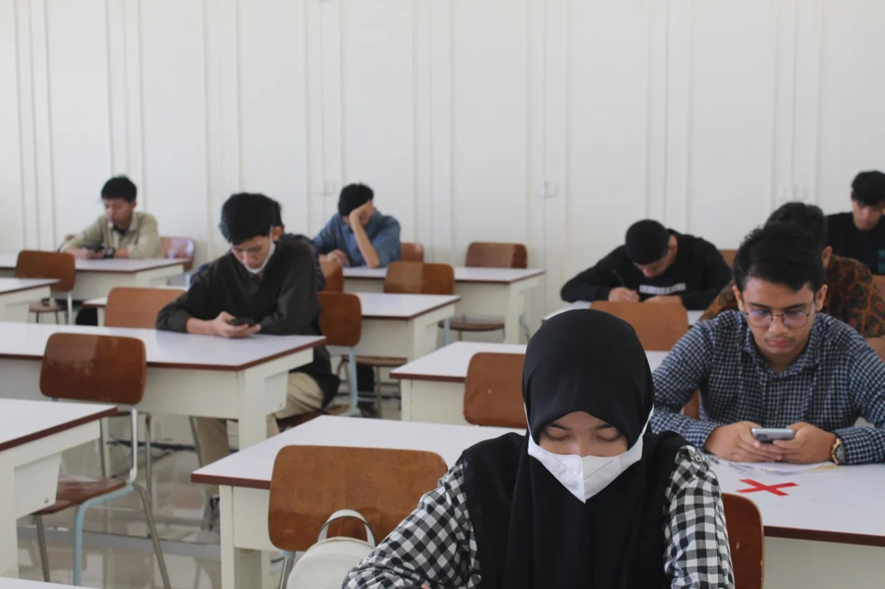

Biodata
Nama: Hadziq
Jurusan: Informatika (S1)
Fakultas: Matematika dan Ilmu Pengetahuan Alam (MIPA)
Kampus: Universitas Syiah Kuala (USK)
Lokasi: Aceh Besar, Aceh
*Catatan: NIM, alamat detail, dan nomor HP disembunyikan untuk privasi.
Family
Saya adalah anak ke-1 dari 2 bersaudara. Keluarga saya saat ini berdomisili di Aceh. Saya sangat menghargai waktu berkumpul bersama keluarga di sela-sela kesibukan kuliah.
My Hobby
- Language Learning: Menyukai beberapa bahasa seperti bahasa Inggris dan Jepang serta tertarik untuk mendalaminya.
- Faith Deepening: Menikmati sesi pendalaman dan pengukuhan iman melalui tontonan video-video para pendakwah jalanan yang sering menunjukkan berbagai macam kontradiksi dalam sistem kepercayaan selain agama Islam.
- Hardware: Tertarik pada optimasi sistem PC dan gadget.
Daily Activities
Sebagai mahasiswa Informatika, keseharian saya diisi dengan:
- Mengikuti perkuliahan sesuai jadwal.
- Mengerjakan tugas pemrograman dan proyek IT.
- Eksplorasi hardware dan optimasi workflow laptop.
My Future
Rencana ke depan saya adalah menyelesaikan studi dengan hasil terbaik dan berkontribusi di dunia teknologi, khususnya yang berkaitan dengan pengolahan data atau pengembangan sistem yang bermanfaat bagi masyarakat.
Gallery
